Geospatial
Visualization
Visualization
School of Architecture
Today's Goals
- Overlays and Interpolation
- Field Presentations
- Little River Critique and Review
- In class time to work on projects
Vector Data Overlays
- Data Structures: Connection and Transformation
- Overlay tools
- Intersect
- Union
- Subtract
- Symmetric Difference
- Identity
- Cover
- Clipping
- Sub-setting data with polygons
- Raster or vector
- Overlay tools
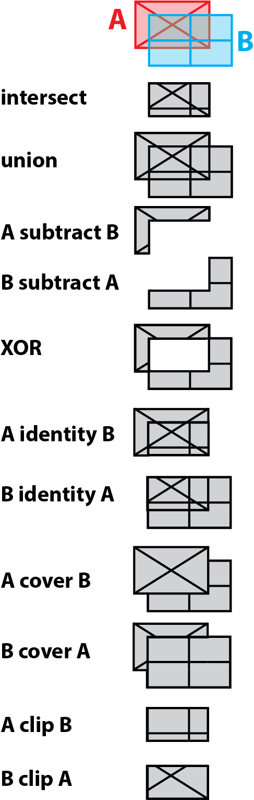
image credit: Overlay. wiki.GIS.com
Intersection of Two Vector Layers
- Only geometries and attributes that overlap are preserved
- Attributes from both layers copied to new feature
- Output geometry is lowest dimension of input geometries - Ratio (ArcGIS) or Overlap (QGIS) analysis
- Attributes calculated as percentage of original area for each new polygon

- Two rectangles in one layer and one circle in second layer
- Three features in two layers to begin
- Two features in one layer as a result - Similar to logical AND
Intersect (Analysis). ArcGIS Pro Help.Calculating percentage of overlap of two layers in QGIS 3. GIS StackExchange
Union of Two Vector Layers
- All geometries and attributes preserved
- FID's are labelled according to layer names
- All features are of original size or smaller (never larger) - Ratio (ArcGIS) or Overlap (QGIS) analysis
- Attributes calculated as percentage of original area for each new polygon
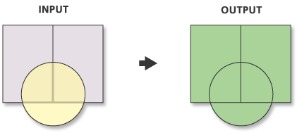 - Two rectangles in one layer and one circle in second layer
- Three features in two layers to begin
- Five features in one layer as a result - Similar to logical OR
Erase (Subtract) of Two Vector Layers
- Only geometries and attributes from input preserved
- All features are of original size or smaller (never larger) - Ratio (ArcGIS) or Overlap (QGIS) analysis
- Attributes calculated as percentage of original area for each new polygon
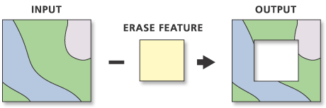 - Four polygons one layer and one square in second layer
- Five features in two layers to begin
- Four features in one layer as a result (with multipart) - Similar to logical AND NOT
Erase (Analysis). ArcGIS Pro Help.
Less common Operations on Two Vector Layers
- Symmetric Difference
- All geometries and attributes that do not co-exist are preserved
- Similar to logical XOR
- (A union B) subtract (A intersect B) - Identity
- Extent of input with geometry and attributes from both layers merged
- (A subtract B) union (A intersect B) - Cover or Update
- Similar to union in extent, but only preserves input geometry and attributes if feature not in update, otherwise copies update attributes to new geometry
- A union (B subtract A)
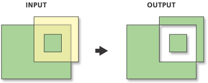
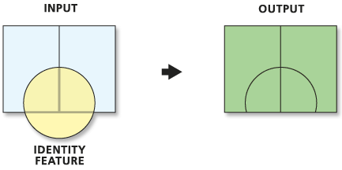

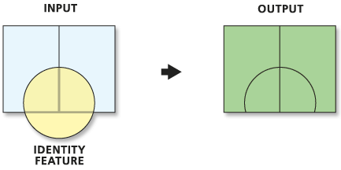
Overlay. wiki.GIS.com
Identity (Analysis). ArcGIS Pro Help.
Update (Analysis). ArGIS Pro Help
Symmetrical Difference. ArcMap Help
Identity (Analysis). ArcGIS Pro Help.
Update (Analysis). ArGIS Pro Help
Symmetrical Difference. ArcMap Help
Clip Vector with Vector (crop)
- Only geometries and attributes from input preserved
- All features are of original size or smaller (never larger) - Both input and clip features can be points lines or polygons
- Be careful of unexpected results
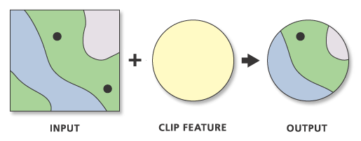 - Four polygons and two points in one layer and one circle in clip layer
- Seven features in two layers to begin
- Four features in one layer as a result (with multi geometries)
Clipping line layer based on polygons with QGIS? GIS StackExchange.
Clip (Analysis). ArcGIS Pro Help.
Clip (Analysis). ArcGIS Pro Help.
Clip Raster with Vector
- Must use one vector feature to clip
- Make sure projections are the same
- It will function across projections, but makes computer work harder
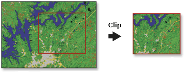 - Does not have to be rectangle
- Hence not "crop"
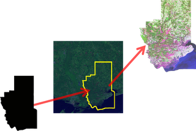
Clip Raster (Data Management). ArcGIS Pro Help.
Clipping raster with vector boundaries using QGIS. GIS StackExchange.
Clipping raster with vector boundaries using QGIS. GIS StackExchange.
Interpolation
Moving data from vector to raster structures
- (review) Raster to Vector : Extract or Zonal Statistics
- Extracts data from continuous surface to discrete features
- Vector (point/line) to Raster: Interpolation
- Interpolates one or more specific data values
- Fills in the gaps between discrete features on a continuous surface
- Vector to Raster (point/line/polygon): Rasterize
- Converts vector geometries to raster image
- Leaves gaps in raster where there is no discrete feature
Continuous surface maps
Technique for mapping gradually changing phenomena
Technique for mapping gradually changing phenomena
ARC 594/694 Fall
Dr. Timothy Norris - tnorris@miami.edu
Adapted from Field (2017) Cartography. Redlands, ESRI Press. pp. 74-75.
Adapted from Field (2017) Cartography. Redlands, ESRI Press. pp. 74-75.
Mapping continuous surfaces
- For data without discreet boundaries
- Often data is collected at points and then Interpolated
- Interpolation from point data to continuous a raster surface requires statistics
- Continuous surfaces representing phenomena and heat maps representing density are not the same
- point data
- polynomial surface
- trend surface
- universal kriging
- kernel density
- inverse distance weighted (IDW)
- spline interpolator
- bayensian kriging
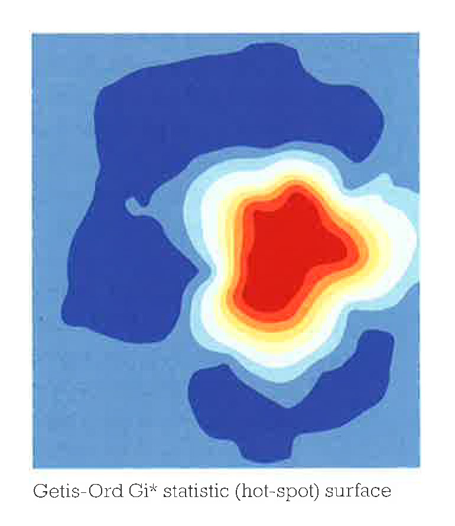
getis-ord gi surface (hot spot)
Related Information
Related Information
Water accumulation map:
https://nawimaps.com/maps/moisture-model/
https://nawimaps.com/maps/moisture-model/
Interpolation Exercise
Estimating PM2 concentrations for the continental United States
- Creating x/y data from a csv (review)
- Inverse Distance Weighting Interpolation
- Spline Interpolation
- Kriging
- Clipping interpolation with boundary polygon
- Clipping raster with boundary polygon
- Raster algebra (review)
Interpolation Exercise
Download from indicated source or Box (epa.zip in data folder)
- EPA AQS PM2.5 Annually Summary data 2022
annual_conc_by_monitor_2022.csv (create x/y points from lat/lon - NAD83!!) - USA nation outline TIGER file (geography division, census bureau)
cb_2018_us_nation_5m.shp - USA major cities (ESRI living atlas, can be data as a service)
Load into ArcGIS Pro and style as needed
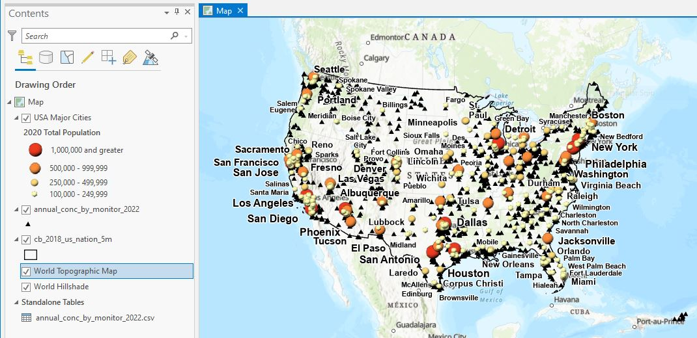Inverse Distance Weighting (IDW) Interpolation
In tool box under Spatial Analyst
- Take a moment to review the Interpolation toolbox
- Open IDW tool
- Input point features: EPA data
- Z_value: Arithmetic Mean (what is Z-Value?)
- Output Cell Size: 0.183071288 (what is this?)
- Search radius: variable
- Number of Points: 12

Spline Interpolation
In tool box under Spatial Analyst
- Open Spline tool
- Input point features: EPA data
- Z_value: Arithmetic Mean
- Output Cell Size: 0.183071288
- Spline Type: regularized
- Weight: 0.1
- Number of Points: 12
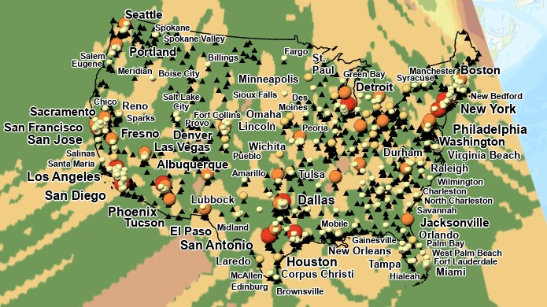
Kriging Interpolation
- Open Kriging tool
- Input point features: EPA data
- Z_value: Arithmetic Mean
- Kriging Method: Ordinary
- Sevivariogram Model: Spherical
- Lag size: 0.183071288
- Number of Points: 12
- Output Cell Size: 0.183071288
- Search Radius: Variable
- Number of Points: 12
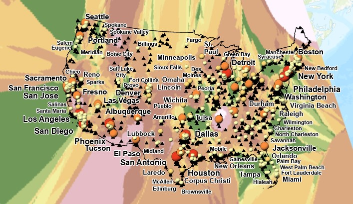
Compare Different Interpolations
Clip all three rasters to extend of continental USA
- edit cb_2018_us_nation_5m.shp and delete Alaska, Hawaii, and Puerto Rico (review)
- Open clip tool (analysis tools)
- Input Raster: an interpolated raster layer
- Output extent: cb_2018_us_nation_5m
- [x] Use Input Features for Clipping Geometry
- When complete, copy symbology from source to new layer
hint: right click new layer, select symbology and use hamburger menu to "Import from Layer"
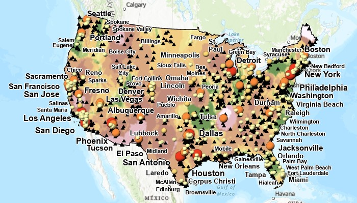
Compare Different Interpolations
Use Raster Calculator to compare values (review)
- Open Raster Calculator (spatial analyst tools)
- Map algebra expression: kriging - spline
- Symbolize with diverging color ramp
- Interpret ....
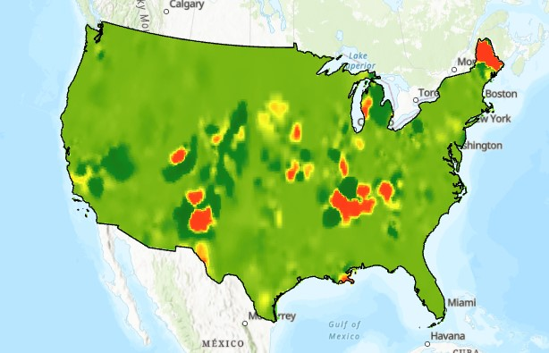